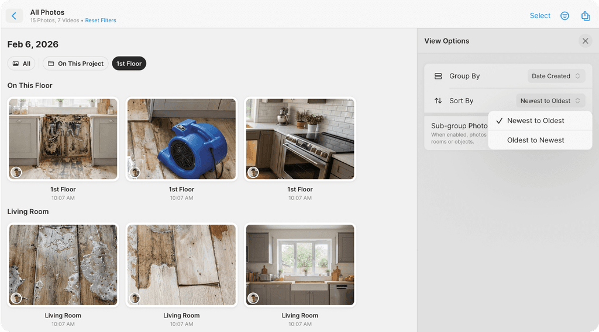

MagicPlan 用了三年才发现的五个隐藏功能，大多数人扫完 AR 就关掉了
以为 MagicPlan 就是扫个房间出平面图？其实 Square Room、标高视图、激光推送这些冷门入口能把量房效率翻三倍。
你以为 MagicPlan官网 上宣传的就是掏出手机 AR 扫一圈、出张平面图、然后关掉？我当初也是这么想的——最早从 官方下载 拿到它的时候，也以为就这点事。直到接了一个联排别墅的活，AR 扫完大户型已经累得胳膊酸，结果发现旁边三间一模一样的客房根本不需要重新扫——藏得真深，我花了快两年才把这些入口一个一个摸出来。
这篇不讲那些人人都知道的基础操作，专挑 MagicPlan 里官方没怎么宣传、菜单藏得深、但真能省时间的五个冷门功能。每个我都试过，告诉你什么场景值得开、什么人可以直接跳过。
Square Room：10 秒画完一间方卧室，连 AR 都不用开
这个是我最近才挖到的宝。之前一直老老实实 Define Corners 逐个点四个角，直到某天在 Insert 菜单里乱翻，才发现 Room 下面居然还有个 Square Room 选项。
藏在哪：画平面图时，点底部 Insert 按钮 → Room → Square Room。弹出来一个框，只需要填三个参数——Length（纵向长）、Width（横向宽），可选填 Rotation（旋转角度）。填完点一下画布，四条墙、面积、周长瞬间生成，连尺寸校准都省了。
什么场景真有用：卧室、书房、厨房这些标准矩形房间，AR 扫反而容易飘。还有联排户型里那间没扫上的储物间——用 Square Room 补一下，比重新架手机扫两分钟快多了。老设备不支持 AR 的更是直接用这个 + Define Corners 组合。
别担心锁死：生成的方形房间不是死的，后续随时可以拉伸某一面墙改成非方形，或者加一个角落变成 L 形。它只是帮你省了最初画四条边的功夫，不是把你定死。

标高（Elevation）视图：2D 里永远看不见的纵向尺寸
MagicPlan 默认给的是 2D 俯视图，偶尔切切 3D 立体看个热闹。但很少有人知道还有第三个视图——标高（Elevation），它显示你当前选中那面墙的侧立面。
藏在哪：屏幕顶部或底部的视图切换按钮，除了 2D 和 3D 两个图标，旁边还有一个标高按钮（图标是一面墙的侧立面）。点一下，画面直接切成这面墙的侧视。
为什么重要：2D 里你只能看到门窗的平面位置，但看不到窗底离地多高、门框顶到天花板还有多少空间、天花板实际高度是多少。这些纵向尺寸在 2D 里全是隐形的，只有切到标高视图才会浮现出来。装地板、装门窗、给施工队提要求之前，必切一遍标高核对。
什么人可以无视：只出粗稿给自己参考的，2D 够用了。但要给业主看或交给施工队的，标高是我每次必跑的流程。
激光测距仪的推送触发：按一下没用，得长按 2 秒
我一开始连激光测距仪（比如 Leica DISTO 系列）的时候，点连接、按测量键、等数值跳出来……等半天没反应。以为连坏了，重连、重启设备、重新开 MagicPlan，还是不推。
后来去 MagicPlan文档 翻了半天才找到：部分型号的推送不是按一下测量键，是长按 2 秒触发推送模式。按一下只是在测距仪本机显示数值，长按才会通过蓝牙把数据推到 MagicPlan 里改那面墙的精确尺寸。
藏在哪：没有菜单入口，是测距仪本身的操作逻辑。MagicPlan 文档里只提了一句"Push to Bluetooth"模式，但没说触发方式是长按。
什么型号需要注意：Leica DISTO 的 X 系列、部分旧款，都是长按触发。新一点的型号可能按一下就推了，但不确定的时候先长按试试——别像我那样折腾半小时才发现是这个。

Start from Previous：联排房间一键复制改尺寸
酒店客房、学生宿舍、联排别墅的次卧室——这些户型高度同质化，每个房间就差个几厘米的尺寸。如果用 Square Room 一个一个填长宽，还是有点傻。
藏在哪：同样在 Insert → Room 菜单里，紧挨着 Square Room 上面，有个 Start from Previous。选它之后，系统会把你上一个房间的结构、门窗、家具全复制过来，你只需要改长宽几个数字，搞定。
我上次接了一个 12 间客房的酒店改造活，第一间用 AR 扫完，后面 11 间全用 Start from Previous 改尺寸，每间不超过 30 秒。比我同事用旧方法一间一间扫快了整两个小时。
注意点：复制过去的门窗位置、家具布局是和上一间一模一样的，如果实际有差异需要手动微调——但 90% 的联排户型差异也就几厘米，微调比重扫快得多。
云端 3D 渲染：大户型本地卡成 PPT 时的救命开关
3D 视图人人都切过，但如果你扫的是别墅、大平层、甚至整栋楼——本地渲染会卡，旋转一下转半天，缩放也慢。我第一次遇到的时候以为是 iPad 该换了，结果在设置里翻到了云端渲染的开关。
藏在哪：项目设置 → 3D Rendering 选项里，有一个 Cloud Rendering 的开关。打开之后，3D 视图的渲染会交给 MagicPlan 的云端服务器处理，你的设备只接收渲染好的画面，流畅度瞬间拉满。
前提：需要 Sketch 及以上的订阅，免费版没有。但如果你是专业量房、一天跑好几个工地的，这个订阅费绝对值——别让客户等你手机转圈圈。
最后说一个坑：DXF 导出不包含尺寸标注
四个隐藏功能讲完了，说一个官方没藏好但很多人踩过的坑。
MagicPlan 导 DXF 到 CAD（AutoCAD、天正、浩辰都行），只导出墙体、门窗、家具的几何形状，所有尺寸数字、房间面积、门窗尺寸都不带过去——这是目前版本的硬限制，不是你操作错了。
所以工作流必须是：MagicPlan 里扫完、编辑完、确认尺寸正确 → 导出 DXF → 进 CAD 重新标注、加标高、按施工图规范调图层。MagicPlan 帮你省了量房和画墙，CAD 深化那步一步不能省。
版本差异在官方下载页面上有详细说明——DXF 导出也需要 Sketch 及以上订阅，免费版只能导出带水印的 PDF 和低分辨率图片。
总结一下
MagicPlan 真不是 AR 扫一圈就完的工具。Square Room 补小房间、标高视图查纵向、激光测距仪长按推送、Start from Previous 复制联排、云端渲染救大户型——这五个功能我现在每天都在用，把量房效率至少提了一倍。
把工具用透比换工具重要。下次打开 MagicPlan 的时候，别只盯着 AR 扫描按钮，Insert 菜单和视图切换那堆小图标里，藏着不少官方没明说的好东西。
这套资料我维护了三份同步——国际读者上 GitHub，国内网络环境直接选 Gitee 或 GitCode，访问速度快得多。